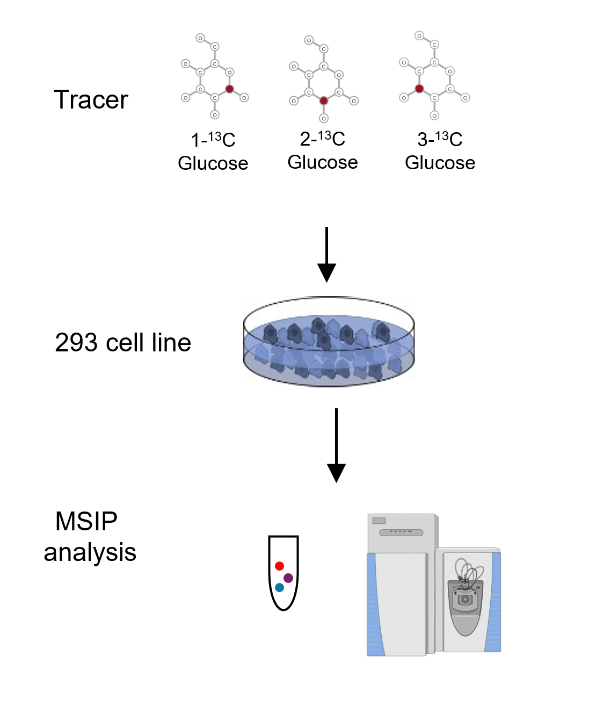

Three one carbon labeled glucose Project
toclg.RmdIntroduction
This project show MSIP analysis in a data set from three type of one carbon labeled glucose tracer. The data set is acquired from isotopic glucose traced cell samples, we use three type of tracer: 1-13C Glucose, 2-13C Glucose and 3-13C Glucose to trace 293 cell line for 24h, and collect the cell samples for MSIP analysis.

Experiment design
Result
We use ShinyAPP to interactively present the original MS data and the process of MSIP
Access Three one carbon labeled glucose.